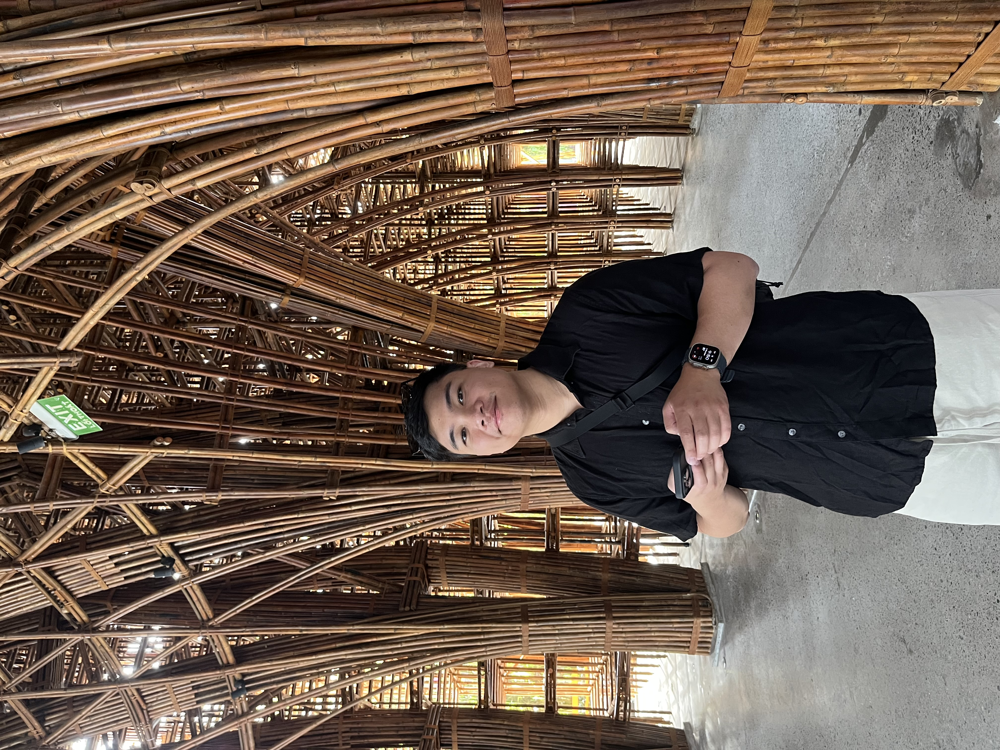

Jerico is a Boston-based product manager—a UX designer turned PM who has led product at early-stage startups, later-stage startups, and corporate tech companies.
He's currently leading product at Xpansiv, an ESG unicorn (backed by Blackstone, Goldman Sachs, Aramco Ventures, and more).
Previously, he managed a product portfolio (Subscriptions, Order History, and Shopping Lists) generating <$1B in annual revenue at Staples. Before that, he led Tracking Visibility & Reporting products at Pitney Bowes (NYSE: PBI) and built the Marketplace Platform at Exporta.io—born from Harvard iLabs and backed by Pear VC, Felicis, and Flybridge.
He started his career in UX design, including time at Spotify, before transitioning to product management.
Born and raised in Vancouver, BC, Jerico now splits his time between San Diego and Boston. Outside of work, he enjoys running and lifting—and his guilty pleasure is Raising Cane's.
He's currently working on a passion project—an AI agent for competitive research. If you're building something too, reach out.
I like building tools that solve real problems. Here are some things I've been working on.
A voice-powered Claude AI assistant for Apple Watch—tap, speak, and get instant AI responses on your wrist.
An AI voice agent for competitive analysis—born from my personal experience of manually grinding out hours of competitive and market research.